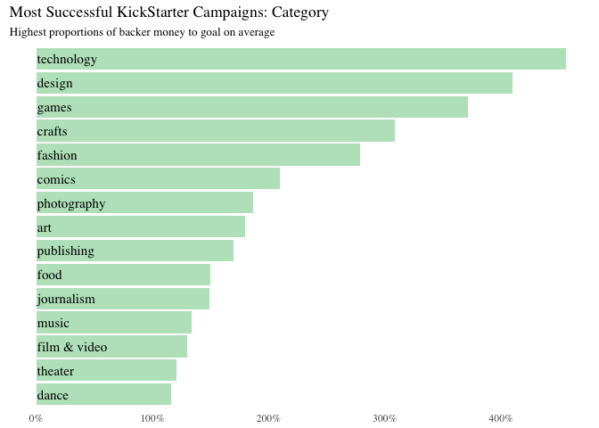
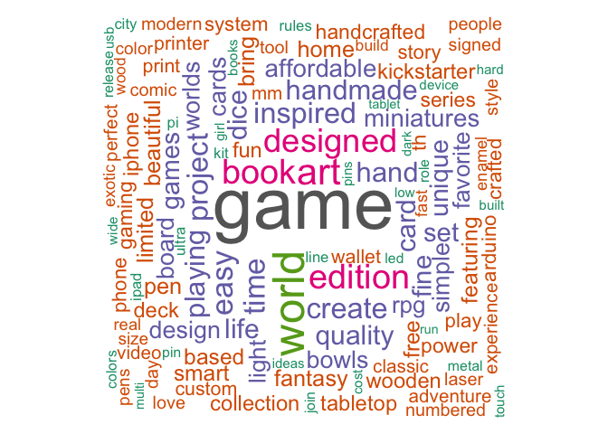

Kickstarter is a public-benefit corporation based in Brooklyn, New York, that maintains a global crowd funding platform focused on creativity. The company’s stated mission is to “help bring creative projects to life." Kickstarter has reportedly received more than $1.9 billion in pledges from 9.4 million backers to fund 257,000 creative projects, such as films, music, stage shows, comics, journalism, video games, technology and food-related projects. Below, descriptions of Kickstarter projects are analyzed to identify commonalities of successful and unsuccessful projects using text mining techniques.
To define “success,” I chose to create a ratio of pledged amount of money divided by the monetary goal of the campaign. I removed any campaign with a goal of under $30 to ensure results were a bit less skewed and eliminated any campaigns deemed "unsuccessful" since many of these campaigns dropped out or discontinued. I then broke out the results into categories of campaigns; we can see below that all campaign categories received an average of over 100% of their goal money, which is a little surprising! The technology category seems to have the most success while art campaigns were still highly successful (over 100% of goal money on average) but less exorbitantly successful than other campaign categories.

I was curious to visualize success in San Francisco because
it’s a tech hub and a hot spot for Kickstarter campaigns. Most campaigns
from San Francisco received over 100% of their goal from their backers,
so “success” took on a new definition: popularity. In the visualization below, larger bubbles
had more
backers and bubbles placed higher up on the graph received the most pledged
money. The scales of the x-axis versus the y-axis show that no projects
asked for over a million dollars, yet one received up to 6.5 million and
multiple received multi-millions of dollars! Scroll over each bubble
for more information about the project.
Each campaign contains a blurb – a short description of the project. While not the full description of the project, the short headline is arguably important for eliciting interest in the project (and ultimately popularity and success). Below is a visualization of the most common words used in Kickstarter blurbs.
Most common words include “game,” “art,” “designed” and “homemade.”
Many of the kickstarter projects must be game-related, and it’s not
surprising that many projects are “homemade” and “artistically” “designed”
due to the popularity of the "DIY" aesthetic.

Graphics were created using R, and Leaflet. Data from a web-scraper found here. Code on Github.